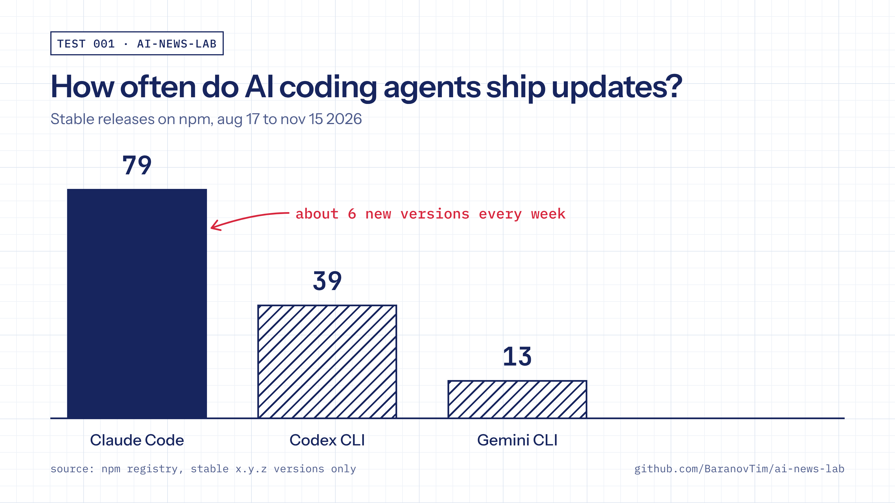

How often do AI coding agents ship updates?
Short answer
Claude Code shipped 79 stable updates in 90 days. That's about twice as many as Codex CLI (39) and six times as many as Gemini CLI (13).
about 6 new versions every week
What I tested
Every stable version (plain x.y.z, no alpha, nightly, preview or platform builds) that each tool published to the public npm registry in the 90 days before Nov 15, 2026. The publish dates come straight from npm.
Results
| Tool | Stable releases | Per week |
|---|---|---|
| Claude Code | 79 | 6.1 |
| Codex CLI | 39 | 3.0 |
| Gemini CLI | 13 | 1.0 |
Limits
A version count says nothing about how big or how good each update is. Codex and Gemini CLI also ship many nightly and alpha builds, which aren't counted here.
Run it yourself
The code and the raw data are on GitHub: ai-news-lab/2026-11-15-coding-agent-update-pace. Run python main.py.